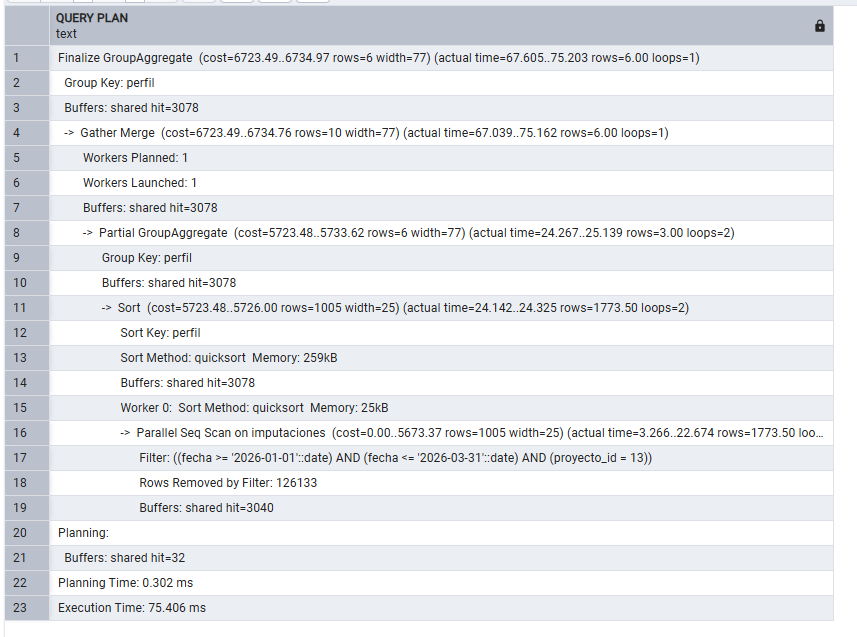
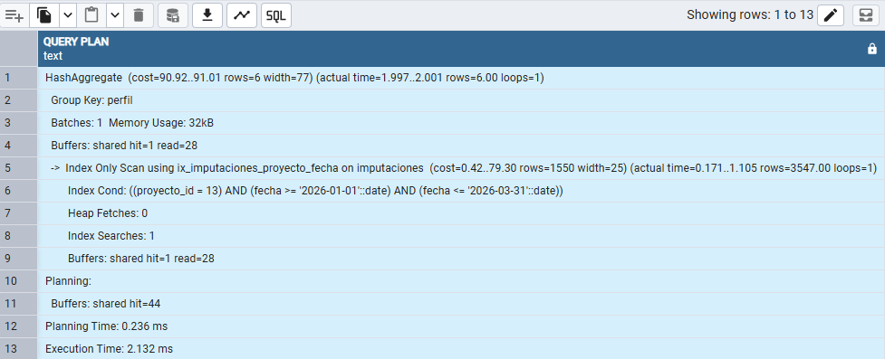

Seguimiento de 60 proyectos de TI: coste frente a presupuesto, hitos, semáforo y velocidad de los equipos Scrum. Va de la base de datos al informe. Datos sintéticos generados con Python.
Código en GitHub →Una página para dirección (semáforo y coste) y otra para el jefe de proyecto (velocidad sprint a sprint).
El semáforo se calcula en una vista de PostgreSQL. Así da lo mismo en cualquier informe y se puede comprobar con una consulta.
WITH coste AS ( SELECT proyecto_id, SUM(coste) AS coste_real FROM imputaciones GROUP BY proyecto_id ), h AS ( SELECT proyecto_id, COUNT(*) FILTER (WHERE fecha_real > fecha_plan + 7) AS hitos_con_retraso, -- 1 semana de tolerancia COUNT(*) FILTER (WHERE fecha_real IS NULL AND fecha_plan < DATE '2026-09-21') AS hitos_vencidos FROM hitos GROUP BY proyecto_id ) SELECT p.codigo, p.presupuesto, co.coste_real, ROUND(co.coste_real / p.presupuesto - 1, 4) AS desviacion_coste, CASE WHEN co.coste_real / p.presupuesto > 1.10 OR h.hitos_vencidos >= 2 THEN 'Rojo' WHEN co.coste_real / p.presupuesto > 1.00 OR h.hitos_con_retraso >= 2 THEN 'Ámbar' ELSE 'Verde' END AS semaforo FROM proyectos p LEFT JOIN coste co USING (proyecto_id) LEFT JOIN h USING (proyecto_id);
Es la consulta que lanza el informe al filtrar un proyecto y un trimestre, sobre unas 256.000 filas. Medida con EXPLAIN (ANALYZE, BUFFERS).
-- igualdad primero, rango después; INCLUDE evita volver a la tabla (index-only scan) CREATE INDEX ix_imputaciones_proyecto_fecha ON imputaciones (proyecto_id, fecha) INCLUDE (perfil, horas, coste);


El script revisa duplicados, registros huérfanos y valores fuera de rango antes de cargar. Si algo falla, no carga nada: prefiero un informe de ayer a uno con datos mal.
def main(): datos = {t: leer(t) for t in TABLAS} errores = validar(datos) if errores: print("Validación fallida, no se carga nada:") for e in errores: print(" -", e) sys.exit(1) cargar(datos) # COPY de las 5 tablas en una sola transacción
Esto corre en local. Con Fabric lo montaría así:
| Pieza en local | Equivalente en Fabric | Por qué |
|---|---|---|
| cargar_postgres.py | Dataflow Gen2 conectado a PostgreSQL con gateway | La carga queda programada y a la vista del equipo |
| Validaciones en Python | Notebook que valida antes de escribir en el Lakehouse | Se mantiene el «si falla, no se carga» |
| Ejecución manual | Data Pipeline diario con alerta si falla | Si un día no se actualiza, alguien se entera |
| Vistas vw_* | Tablas en la capa gold del Lakehouse o Warehouse | El semáforo sigue en SQL |
| Importación en Power BI | Modelo semántico en modo Direct Lake | Sin copiar datos ni programar refrescos del modelo |
Desviación solo en proyectos cerrados. Al principio todos los sectores salían por debajo de presupuesto. Era engañoso: los proyectos en curso todavía no han gastado lo suyo. Mirando solo los cerrados, Defensa y Transporte tienen sobrecoste.
Una semana de margen en los hitos. Contando cualquier retraso de un día, el 65 % de la cartera salía en ámbar, y así el semáforo no ayuda a priorizar. Con 7 días de margen quedan 33 en verde, 19 en ámbar y 8 en rojo.